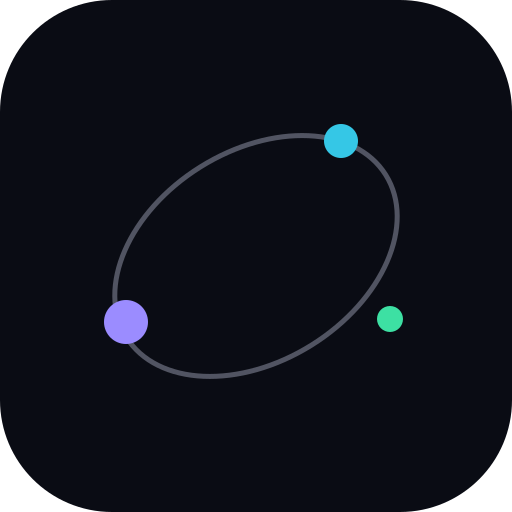
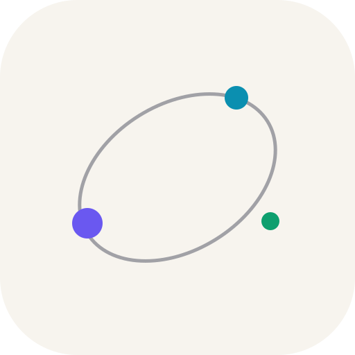
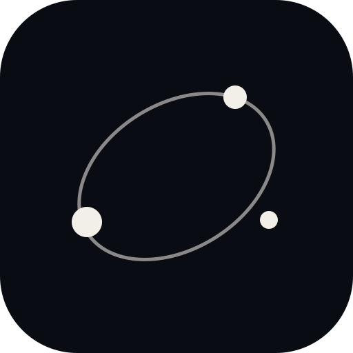

Dark

180 px120 px
60 px
ST-029a · concept studies · platform-neutral
A quiet center gives three subscription bodies room to read as a household system. A closed orbit suggests continuity without turning the mark into a generic planet badge.
The studies are shown at 180, 120 and 60 CSS pixels. Each body keeps a distinct size and position when color is removed.

180 px
180 px
180 pxAllt ni prenumererar på. På ett ställe.
Everything you subscribe to. In one place.
Motion note: aurora resolves over 900 ms with a 120° sweep and ease-out; three bodies arrive at 450 ms intervals, each over 600 ms with a soft spring (damping 18, stiffness 180). Reduced motion uses this complete, still composition immediately; no runtime animation is included here.
Imagery-led orbital field with no text baked into the artwork; intended as a visual direction only.
Design study only. SVG viewBoxes are working canvases, not confirmed platform export dimensions or safe zones.